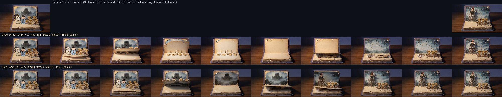
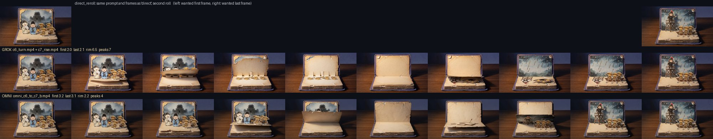
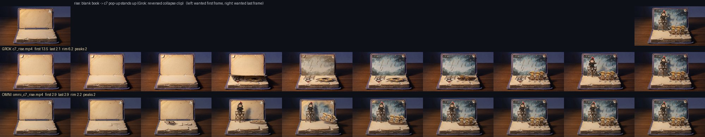
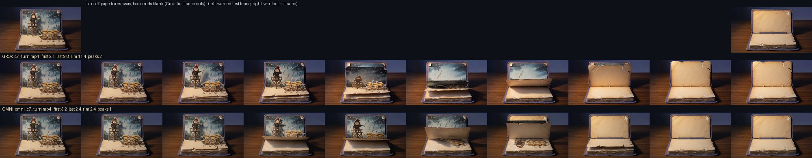
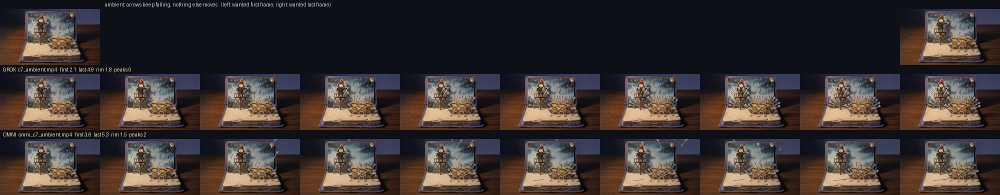

第七章 A/B：Grok CLI vs Gemini Omni 1.1 Flash
同一張首格（和末格）、同樣 720p 16:9、各 6 秒。左邊 Grok 是原本 影片版 用的片，右邊 Omni 是 2026-09-28 生成。Omni 片有聲音，Grok 片沒有。詳細數字見 README.md。
一鏡到底：第六章翻到第七章
Grok 只能釘首格，只好拆成「c6 翻頁（結束在空白）」＋「c7 升起（收折片倒放）」兩支再接起來。Omni 可以同時給首格 c6、末格 c7，一支片做完。同樣的 prompt 抽了兩次。
兩端都釘住了，但中段還是要抽：第一抽翻起來的頁背面又畫了一次 c6 的城樓，c6 人物憑空消失，約 3.5–4 秒之間背景直接換成 c7，劇情不通； 第二抽順序對了（掀頁 → 空白 → 紙雕立起），但 c7 幾乎在 4.5→5.0 秒的半秒內「跳」出來，因為末格被釘死、時間不夠用。兩抽裡有一抽能用。
升起：空白老書 → 第七章
Grok 版是收折片倒放（首格實際上不是真的空白，差 13.5）。Omni 首格＝空白母版、末格＝c7.jpg。
Omni 兩端都準，鏡頭也更穩。它先立起紙偶、背景畫再淡入，順序和 Grok 倒放的效果相反，但都說得通。
翻頁：第七章翻走，留下空白
都翻對了一次。Omni 的結尾就是我們給的空白母版，Grok 的結尾「接近空白」但書和光都偏了（這就是影片版要靠淡入去蓋接縫的原因）。
環境片：箭繼續射進草人
各錯一種：Grok 保住了背景畫，但箭插得像扇子，連曹操自己的望樓都中箭（射錯邊）； Omni 的箭是真的「飛進來」再插上，動作好看很多，但背景畫上原本畫的箭在 2 秒內被抹掉了（重畫了背景），地上還多一支散箭。
數字總表
| 測項 | 一方 | 首格差 | 末格差 | 背景晃動 | 動作峰 | 聲音 |
|---|---|---|---|---|---|---|
| rise | Grok | 13.5 | 2.1 | 6.2 | 2 | 無 |
| Omni | 2.9 | 2.9 | 2.2 | 2 | 有 | |
| turn | Grok | 2.1 | 9.8 | 11.4 | 2 | 無 |
| Omni | 3.2 | 2.4 | 2.4 | 1 | 有 | |
| ambient | Grok | 2.1 | 4.9 | 1.8 | 0 | 無 |
| Omni | 3.6 | 5.3 | 1.5 | 2 | 有 | |
| c6→c7 | Grok（兩支） | 2.0 | 2.1 | 6.5 | 7 | 無 |
| Omni 第一抽 | 3.2 | 3.0 | 2.1 | 2 | 有 | |
| Omni 第二抽 | 3.2 | 3.1 | 2.2 | 4 | 有 |
「差」＝該端影格與指定圖在 320×180 的平均絕對差（0–255）；參考：c6 對 c7 是 18.7，c7 對空白母版是 20.2。「背景晃動」＝書以外的桌面與牆面相對第 0 格的最大漂移。
逐格對照圖




